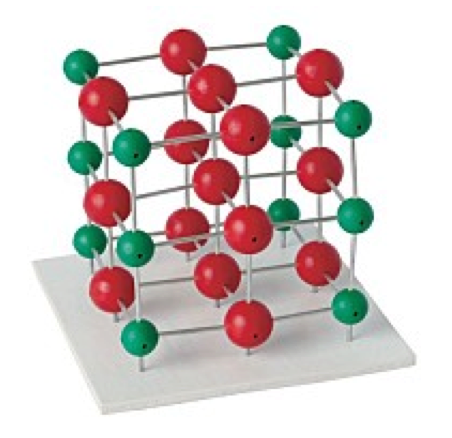
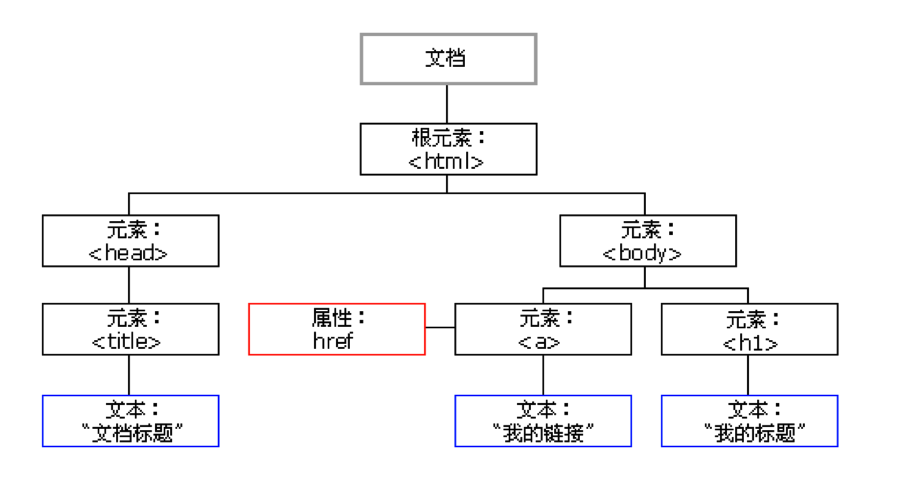
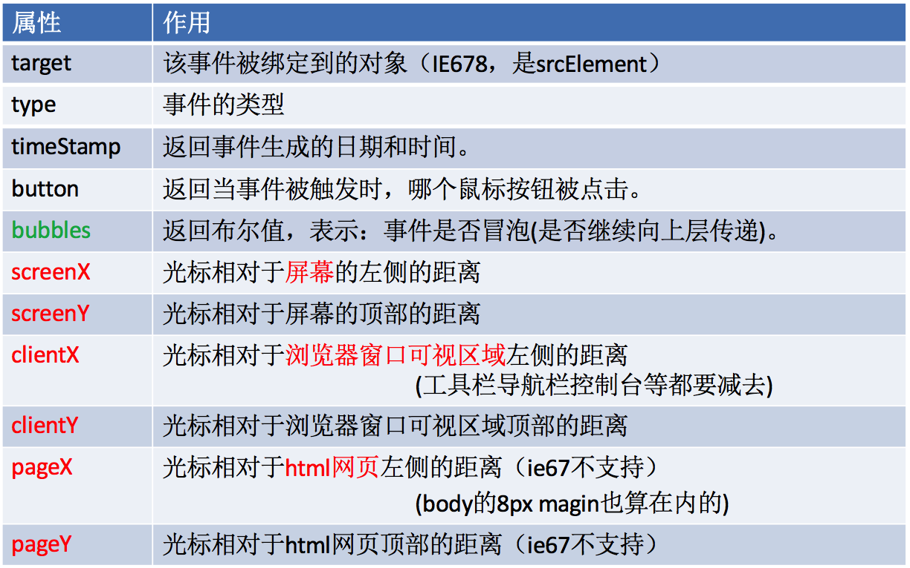
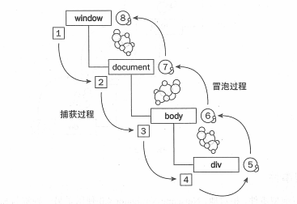
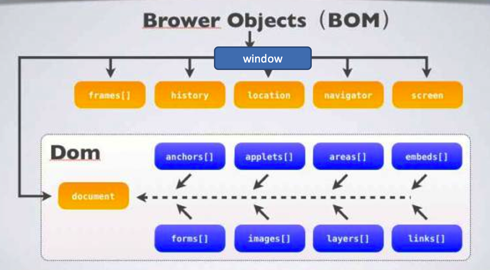

最初浏览器中为了方便检索界面上的元素提供了非常方便的api，查询页面上的元素。实验性质的api称为DOM0
document.form[0]
document.images[0]
随着JavaScript的普及，不同了浏览器分别扩展了JavaScript，此时程序员就苦逼了
document.layers["d1"] //Netscape
document.all["d1"] //IE
DOM1规定了节点的类型Node
为了统一浏览器之间的差异W3C制定了DOM1。
比如获取浏览器的元素，不同浏览器下都可以使用
document.getElementById()
DOM2就是指HTML或者XML文件
DOM(Document Object Model) -- 文档对象模型，又称为文档🌲模型。就是将HTML/XML文档中描述为一个树状结构的文档(文档树)，将文档中每一块的内容当成一个个的节点对象，挂在树上，这个树形结构的标准模型就称为DOM，又称DOM树。是一套API。
简而言之：DOM就是html文档的模型抽象。数据以树的形式在内存中排列。
document是文档对象模型的一部分。
DOM是一个复合的数据类型。
 DOM的数据结构（树状）  解析过程HTML加载完毕，渲染引擎会在内存中把HTML文档，生成一个DOM树，getElementById是获取内中DOM上的元素节点。然后操作的时候修改的是该元素的属性。
DOM就是浏览器将html文档转成一个个对象，然后给js留的一些JS语言的API，供其操作页面元素，所以说DOM，是js的一个模块的API
用途：对元素节点进行
行内：
js是css一样的，都是在HTML标签里写东西
当是内嵌/外链的时候，怎么将标签与css样式 / js方法联系在一起？
css：标签与自己调用的样式，保持两者类名、id一致，编译器自己就会将它们联系到一块
js：我们必须在JS文件中手动获取到这个标签，来给这个标签加事件。多了一步获取标签。
节点(Node)：HTML文件中的所有内容都可以称之为节点。节点是DOM的组成单位。
根据类型分为：
元素节点(html中叫标签，js中叫元素)
根元素节点：又称文档元素，文档中的第一个元素<html>
属性节点（标签属性）
文本节点（标签的文本内容）
区分方法：nodeType: 1是标签,2是属性,3是文本
根据层级关系：父节点、子节点、兄弟节点.
除了nodeType，还有两个节点属性：
nodeName 标签名字/属性名字/文本名字(#text)
nodeValue null/id值/文本的内容
节点是一个对象，有属性和方法。获取方式有很多种。通过DOM的方法获取到某一个节点，然后console.log，在控制台打印，就可以看到这个元素节点就是以对象方式呈现的，可以看到节点对象的属性和方法。
DOM节点对象的获取，有五种方法：API是BOM顶级对象window.document.方法()
其中html/body/head/title例外，API是作为window.document.属性
根据标签ID来获取
var div = document.getElementById("demo");
根据标签名来获取
var arr1 = document.getElementsByTagName("div");
根据类名来获取，h5新增，IE5.6.7.8中无效
var arr2 = document.getElementsByClassName("demoClass");
不常用的两种：根据name属性来获取，表单控件中设置的name的比较多
var arr3 = document.getElementsByName("");
根据命名空间来获取，XML中使用
var arr4 = document.getElementsByTagNameNS();
只有第一种，返回值是一个标签，可以直接使用。获得属性值，设置属性。
剩下四种的返回值都是标签数组，习惯性是遍历之后再使用。
特殊情况：数组中的值只有1个。
document.getElementsByTagName("div")[0];取数组中第一个元素
document.getElementsByClassName("a")[0];取数组中第一个元素
注意：1. getElementsByTagName()是节点的方法，document能调，我们自己获取的节点也能调，前者是在整个html文档中找，后者是在调用方法的标签里找，缩小范围，节省性能，最好用这个，也免得误操作了其他的元素
document.title --- 文档标题；
document.head --- 文档的头标签
document.body --- 文档的body标签；
document.documentElement --- 这个很重要
它表示文档的html标签， 也就是说，基本结构当中的html标签并不是通过document.html 去访问的，而是document.documentElement 。
声明DTDDTD的概念
dtd声明是为了让老版本浏览器，支持一些新的api(个人理解：相当于给把给老版本浏览器导入一个系统框架，会替换已有的一些api)
IE9的时候微软将浏览器推翻重做，外观差不多，但是底层实现原理改了许多(叫Spartan斯巴达)，所以一些兼容问题是，IE8是个分界点
判断代码有没有声明DTD。
document.compatMode === "BackCompat"
BackCompat 未声明
CSS1Compat 已经声明
IE678默认识别CSS1Compat ，无论有没有dtd，即默认帮文档声明DTD
注意大小写
这里之所以提到这个，是因为document.body、document.documentElement的选择与是否声明DTD有关系
document.body
没有声明dtd的时候用，声明以后就不能用这个了
(谷歌只认这个api，下面这个就是声明了，也不支持)
document.documentElement
声明dtd的时候使用
(IE 678只认这个api，而且ie678默认网页已声明dtd)
IE9+ 、火狐这俩个都识别。
之所以有这个分歧，是有人认为界面是body在滚动，有人认识是html(documentElement代指html)在滚动。现在认为是body在滚动的人多。
DOM里的API是做为DOM节点对象的属性和方法存在的。其用途总而言之来说就是：对节点查改增删
我们下面根据用途划分模块，分来讲解：
节点的访问关系，是以节点.属性的方式存在的。
DOM的节点并不是孤立的，因此可以通过DOM节点之间的相对关系对它们进行访问。
访问关系：父节点、子节点、兄弟节点.
重点是两个属性：parentNode、children
Ⅰ父节点 （ parentNode ）调用者就是节点。一个节点只有一个父节点。调用方式就是节点.parentNode.
Ⅱ子节点 - 单个子节点IE678中指第一个子元素节点（标签）。
在火狐谷歌IE9+以后都指的是第一个节点（包括空文档和换行节点）。
firstElementChild:在火狐谷歌IE9都指的第一个元素节点。
写法：第一个子节点=父节点.firstElementChild || 父节点.firstChild
IE678中指最后一个子元素节点（标签）。
在火狐谷歌IE9+以后都指的是最后一个节点（包括空文档和换行节点）。
lastElementChild：在火狐谷歌IE9都指的最后一个元素节点。
写法：第一个子节点=父节点.lastElementChild|| 父节点.lastChild
它是标准属性，它返回指定元素的子元素集合，包括HTML节点，所有属性，文本节点 （他还是W3C的亲儿子 ）
火狐 谷歌等高本版会把换行也看做是子节点
nodeType == 1 表示的是元素节点(标签)
nodeType == 2 表示是属性节点
nodeType == 3 是文本节点
写法：子节点数组 = 父节点.childNodes; 获取所有节点。
非标准属性，它返回指定元素的子元素集合。
但它只返回HTML节点，甚至不返回文本节点，虽然不是标准的DOM属性，但它和innerHTML方法一样，得到了几乎所有浏览器的支持。
children在IE6/7/8中包含注释节点，在IE678中，注释节点不要写在里面。
写法：子节点数组 = 父节点.children; //用的最多。
Sibling就是兄弟的意思。
Next：下一个的意思。
Previous:前一个的意思。
nextSiblingIE678中指下一个元素节点（标签）。
在火狐谷歌IE9+以后都指的是下一个节点（包括空文档和换行节点）。
nextElementSibling在火狐谷歌IE9都指的是下一个元素节点。IE678不支持此方法
写法：在IE678中用nextSibling，在火狐谷歌IE9+以后用nextElementSibling
下一个兄弟节点=节点.nextElementSibling || 节点.nextSibling
IE678中指前一个元素节点（标签）。
在火狐谷歌IE9+以后都指的是前一个节点（包括空文档和换行节点）。
previousElementSibling：在火狐谷歌IE9都指的是前一个元素节点。
写法：在IE678中用previousSibling，在火狐谷歌IE9+以后用previousElementSibling。
下一个兄弟节点=节点.previousElementSibling|| 节点.previousSibling
获取兄弟节点获取任意兄弟节点
节点自己.parentNode.children[index];
获取除自己外所有兄弟节点
function siblings(elm) {
var a = [ ];
var p = elm.parentNode.children;
for(var i =0,pl= p.length ; i < pl ; i++) {
if(p[i] !== elm) a.push(p[i]);
}
return a;
}
定义一个函数。必须传递自己。定义一个数组，获得自己的父亲，在获得自己父亲的所有儿子（包括自己）。遍历所有的儿子，只要不是自己就放进数组中。
步骤：先查找得到元素节点 --> 修改属性/样式
html标签的属性
在DOM中，是通过DOM对象的属性来取值/赋值的
两种方法：
1.操作标签对应的DOM对象属性，会反映到标签上：.属性/["属性"]
2.DOM-API直接操作标签：set/get/removeAttribute("")
节点的属性与HTML的标签属性基本名字基本上是一致的。
两个重点属性：
InnerHtml
获取元素节点内的所有内容，包括标签
用的地方很多，当我们要创建很多标签的时候，可以通过给innerHTML赋值，比如：.innerHTML = "<li>内容</li><li>内容</li>"
innerText
获取元素节点中的内容，不包括标签，老版本火狐，不支持Innertext.,支持textContent
其他：
name
获取input类型元素节点name属性的值
Value
获取input类型元素节点value属性的值
classname
类名，class是关键字，所以是className
此外，还有input元素节点的disabled、checked(多选单选的默认选中)属性，还有select的size属性(设置select标签有多少项的高度)，select下拉列表中option项的selected属性
select标签的value值 = 被选中的option标签的value值。如果是多选，value值为被选中option中，最上面那个option标签的value值
注意：disabled、checked、以及selected属性：
1. 只要在标签的行内出现了这个属性，不管赋不赋值，赋任何值，这个属性都生效(通过DOM代码设置时，这个值才能当做是个Boolean值来看)
2. 前面说过，节点.属性 给标签增加属性时，如果这个属性是系统已存在的属性，那么也会显示在标签中，但checked、selected这两个是例外，不会显示在浏览器控制台标签内（setAttribute设置，不管是什么属性都显示）
.className = "xx"
.className += " xx"，多调用一个类选择器
修改属性DOM中的API
获取：getAttribute(名称)
设置：setAttribute(名称, 值)
删除：removeAttribute(名称)
注意：IE6、7不支持。
调用者：节点。
有参数。
没有返回值。
修改元素属性：
元素节点.属性/['属性']
元素节点.setAttribute()（DOM的API中，不再是className，而是class）
两者区别：
get/set/removeAttribute是操作的标签本身
.属性/['属性']操作的是html对应的js-DOM的节点对象。修改节点对象，有时候会反映不到控制台的标签中，也就是显示不了
当操作的是系统原生的属性，没什么区别，都会显示在浏览器控制台的标签中(对于.属性来说，checked、selected是例外，不知道还有没有其他的)，如果添加的是不存在的属性，后者，依旧会显示，前者不会显示
添加/修改属性，当是非原生属性时，这两个方法不能交替使用，赋值和获取值必须用一个方法，各自负责的非原生属性只能自己这个方法能获取到。如果是原生属性，两个方法是可以交替的。(但最好别混用)
div.style.width/["width"]
window.getComputedStyle(元素,null)
参数1：获取属性的元素。
参数2：伪元素，C3学习。
div.currentStyle //IE678
这两个方法获取的是个样式的object对象，我们要取值的样式就是这个对象的属性，进行属性取值就行了：.语法/[""]
兼容方法获取元素样式
function getStyle(ele,attr){
if(window.getComputedStyle){
return window.getComputedStyle(ele,null)[attr];
}
return ele.currentStyle[attr];
}
1.通过style只能获取到元素节点的行内样式，不能获取内嵌和外链的样式。改完之后也是加到行内样式中
2.style是对象
3.样式名字的命名规则变成了驼峰命名。与CSS中用横杠隔开是不一样的
4.style.样式 — 值是字符串，不设置值是""
5.box.style.cssText = “字符串形式的样式”；可以设置多个属性
比如：box.style.cssText = "width: 200px; height: 200px; background-color: red;”;
.style.xx是获取的元素行内样式style中的设置，修改之后，也是加到元素行内样式style中
1.通过元素节点.style.样式/style["attr"]，来一一改变（当需要改变的样式少的时候使用这个）
注意：当我们封装方法，通过传入的样式值来操作的时候，用.语法根本实现不了，只能用style["attr"]
2.通过修改元素节点的class，来调用另外的类选择器，改变样式,而且这个方法，维护方便，也实现了css/js的分离
注意：当我们要修改整个body.style.top/left是不生效的，我们只能调用window.scorllTo(x,y)修改x,y的值，来让body滚动在触发DOM上的某个事件时，会产生一个事件对象event，这个对象中包含着所有与事件有关的信息。比如：事件被触发时，关于键盘和鼠标的一些信息。都是作为event的属性存在的
所有浏览器都支持event对象，但支持的方式不同。
获取普通浏览器支持 event（传参）(参数就是event)
比如：ele.onclick = function (e){
e就是event，可以直接用，或者直接在这里使用event (说是event是事件中的一个内置对象)
}
ie 678 不支持 function()里面传参，然后当做event。只能使用 window.event ,来获取事件对象
常用的兼容写法：
function(event) { // 可以起其他名字，但是一般都用这个
event = event || window.event;
}
| 事件名 | 说明 |
|---|---|
| 鼠标相关的事件 | |
| onclick | 鼠标单击 |
| onmouseenter = onmouseover | 鼠标悬停，即鼠标停留在图片等的上方，前者不冒泡 |
| onmouseleave = onmouseout | 鼠标移出，即离开图片等所在的区域，前者不冒泡 |
| onmousedown | 鼠标按下 |
| onmousemove | 鼠标在标签上移动，移动1px也会触发 |
| onmouseup | 鼠标抬起 |
| ondblclick | 鼠标双击 |
| onkeyup | 按下并释放键盘上的一个键时触发 |
| input表单的事件 | |
| onfocus | 获得键盘输入焦点，常用于文本框。 |
| onblur | 失去键盘输入焦点 |
| onchange | 文本内容或下拉菜单中的选项发生改变 |
| onsubmit | 表单提交事件 |
| onreset | 重置表单时 |
| window的事件： | |
| onload | 网页文档加载事件 |
| onunload | 关闭网页时 |
| onresize | 浏览器窗口大小被拖拽改变，哪怕1px都触发 (texture标签也可以拖拽，但是这个事件对它不生效) |
| onscroll |
盒子内容滚动时，滚动1像素都调用。 可绑定有滚动条的盒子、body/html、window |
onload
什么条件下触动这个事件呢？页面加载（文本和图片）完毕的时候。
用途
js的加载时和html同步加载的，如果使用元素在定义元素之间，容易报错。
window.onload可以预防使用标签在定义标签之前。让整个页面上所有元素加载完毕在执行js内容
onscroll
滚动事件(window.onscroll = fun...)
屏幕每滚动一次，哪怕只有1像素都会触发这个事件。这样就可以用来检测屏幕滚动了。
只能有一个，写了多个以最后一个为准，同理 window.onload
onchange
input上传文件控件，onchange检测上传文件，value是文件路径
事件的属性 PageY和pageX的兼容写法（很重要）: pageY/pageX=event.clientY/clientX+scroll().top/scroll().left
获取event的事件源，兼容写法
//兼容写法获取元素ID，IE678支持srcElement
var event = event || window.event;
var targetId = event.target ? event.target.id : event.srcElement.id;
首先，我们需要了解事件响应链：
OC是button — self.view — window — application，然后hitTest，一步步向下定位找到合适的控件，然后触发绑定的事件。
JS的事件传播分为三个阶段：捕获阶段、目标阶段、冒泡阶段
一旦有事件触发，直接从window开始向下找，直到找到事件的原始元素(target)。这一过程叫做捕获阶段
然后从原始元素(target)开始向上，父系元素中所有绑定此事件的都会被触发。这一过程被称为事件冒泡
这个事件从原始元素开始一直冒泡到DOM树的最上层。(BUG)
无论是.onclick或者addEventListener绑定的，都会响应冒泡机制。
注意：
事件冒泡过程中，所有层级父盒子中绑定此事件的，都会执行事件对应方法，但是这些方法中的event都是指从原始元素传过来的那个，这些方法中的event.target都是被点击的那个原始元素。这是事件委托的理论基础。
不过，这些父盒子事件驱动程序中的this依旧是代表各自父盒子本身，这个是不会变的
冒泡的顺序冒泡顺序
IE 6.0:
div -> body -> html -> document
其他浏览器:
div -> body -> html -> document -> window
不是所有的事件都能冒泡。以下事件不冒泡：blur、focus、load、unload、onmouseenter、onmouseleave
阻止冒泡w3c的方法是：（火狐、谷歌、IE11）
event.stopPropagation()
IE10以下则是使用：
event.cancelBubble = true
兼容代码如下：
var event = event || window.event;
if(event && event.stopPropagation){
event.stopPropagation();
}else{
event.cancelBubble = true;
}
1. 事件委托：简而言之就是，本来应该是绑定在子元素节点身上的事件，绑定到了父元素上，然后在事件对应的方法中，判断event.target.id/class是不是该子元素，如果是再执行相应的方法
事件带来的浏览器默认行为浏览器都有它自己的默认行为
比如：在form中按回车键就会提交表单
单击鼠标右键就会弹出context menu
点击a标签，会跳转页面，也是默认行为（为a标签绑定click方法，方法里可调用下面的那两个方法，取消默认行为）
在onfocus()事件中的浏览器默认行为：为input，增加轮廓框
这个默认行为，好像去不掉，因为在进到这个方法内部的时候，浏览器默认行为已经产生了。
在ondrag事件中的浏览器默认行为：
目标元素，只要没有在dragover事件中，取消浏览器默认行为，那么就不会执行ondrop方法
取消浏览器默认行为的两个方法：在绑定的方法中1. e.preventDefault();
2. 在绑定的方法的最后 return false;
步骤：获取元素节点 --> 绑定事件 --> 给事件绑定一个函数(又叫事件驱动程序)
事件概述JS是以事件驱动为核心的一门语言。
事件绑定三要素事件源、事件、事件驱动程序。
绑定事件+对应方法(事件驱动程序)两种注册方式，都可以看做是给事件源加了一个属性，值是个function方法。可以用事件源.onclick或者事件源["onclick"]取出来，打印出来是个function
第一种绑定方式：事件源.onclick/事件源["onclick"] =DOM0版本规定的，几乎所有浏览器都支持
这个方法绑定的事件，后来的会把前面的层叠
1.直接绑定一个方法(方法名有没有无所谓，一般都没有，没有叫匿名绑定)
div.onclick = function () {
}
2.方法名绑定
div.onclick = fn; // 不要写括号，否则就成返回值了
function fn() {
}
3.行内绑定
<div id="box" onclick="fn()"></div> //要写括号，很与众不同。里面也可以直接写JS代码
function fn(){
//这个方法定义不能写在window.onload方法里，也就说方法：fn不能是局部变量
//此时，这个方法里的this是指window，如果要this代指div标签，上面应该写"fn(this)"
}
1. 事件驱动中，可以多用this，谁调用表示this代表是谁.
2. 方法中，改变标签的style时，可以直接用html标签的Id，比如“boxid”，然后boxid.style，原理是如果在JS中找不到boxid这个变量，就会去找HTML中id为boxid的标签，但是不允许这么做(只有id可以这样，类名标签名不支持)
3. 超链接的事件驱动程序中，return false;可以禁止跳转，也可以在行内写 onclick = “fn()； return false;”
第二种绑定方法：addEventListener(IE9之前是attachEvent)DOM2规定的，现代浏览器+IE9支持，IE9之前使用attachEvent
可以给同一个事件注册多个事件处理程序，不会被层叠(更适合团队开发)
可以选择捕获或者冒泡
addEventListener与attachEvent的区别:
1.参数的区别
addEventListener第一个参数，是不带on的 比如：addEventListener(“click”，code)
attachEvent第一个参数，是带on的，比如：attachEvent(“onclick”，code)
2.this的区别
addEventLisener：事件处理程序会在当前对象的作用域运行，因此，时间处理程序的this就是当前对象
attachEvent：事件处理程序是在全局作用域下运行因此this就是window
addEventListener的第三个参数：boolean，决定事件是在捕获过程中执行还是在冒泡过程中执行
addEventListener第三个参数，默认为false，就是默认的事件响应链的流程(冒泡过程中执行，由里向外)。如果某个事件绑定的时候设置为true，表示将事件提前到了在捕获过程中一旦捕获到了，马上执行。（顺序从外到里）
注意：设置为false,大多数浏览器都支持，设置为true，老版本的控制器是不支持的。很少有人会使用捕获
element.onclick = null;
removeEventListener
IE9以前detachEvent
如果注册的时候使用的是匿名函数，则无法移除
解绑方法与绑定方法是对应使用的，否则解绑是起不到效果的
注意：事件驱动程序绑定的时候是不执行方法里面的代码的，只有当事件被触发时才调用，跟UIButton点击事件一样的道理，绑定的时候就只是绑定了一个方法名
方法被调用的时候，里面的变量再从script 里找，去取值
清除选中的内容除了超链接里的文字，其他标签里的文字内容，我们鼠标双击的时候，都会或多或少地选中一些文字，方便我们赋值粘贴用的，这好像是浏览器底层默认功能。
处理方法：在事件绑定方法中，清除选中的内容
//兼容写法
window.getSelection ? window.getSelection().removeAllRanges() : document.selection.empty();
IE9、Firefox、Safari、Chrome和Opera支持：window.getSelection()
IE9以下支持：document.selection
或者：如果是文字点击，就用超链接来做，然后在绑定的方法里写：return false，就不会发生跳转
实战经验2.输入框占位符的制作
淘宝输入框：label for id + onInput制作，label的内容就是占位符
步骤：创建新的元素 --> 添加到已有节点中
创建DOM节点的几种方法//第一种创建方式：document.write(); 不常用，因为容易覆盖原来的页面。
document.write("<li>我是document.write创建的</li>");
//第二种：直接调用父元素的innerHTNL方法赋值内容。（innerText方法不识别标签） //用的比较多。绑定属性和内容比较方便。(节点套节点时使用)
ul.innerHTML += "<li id='xxx'>我是innerHTML创建的</li>"
//第三种：利用DOM的API创建元素，设置内容属性，然后插入append到父节点。 //也是比较多的，指定数量的时候一般用它。
var newLi = document.createElement("li");
ul.appendChild(newLi);
新的标签（节点） = document.createElement(“标签名”);
复制已有节点新节点=要复制的节点.cloneNode(参数) ; 参数可选复制节点
用于复制节点， 接受一个布尔值参数， true 表示深复制（复制节点及其所有子节点）， false 表示浅复制（复制节点本身，不复制子节点）
插入节点（使用节点）父节点.appendChild(新节点); 父节点的最后插入一个新节点
父节点.insertBefore(要插入的节点，参考节点)；//如果参考节点为null，那么他将在节点最后插入一个节点。
实战：根据服务器返回的数据创建新节点赋值ios获取数据，铺到界面步骤
获取数据数组，取出中间一个个字典，转model，将model一个个值，赋值给控件铺数据
前端步骤：
请求数组数据，截取其中的JSON串(因为JS中JSON就是对象的字面量，也就是对象，所以不用转model了，现成的model)，将数据取出来拼接，赋值给控件的innerHtml属性
innerHTML='' //赋值时建议单引号，因为里面有大量属性，都是双引号
父节点.removeChild（子节点）；必须制定要删除的子节点
节点自己删除自己：不知道父级的情况下，可以这么写：node.parentNode.removeChild(node)
rows:返回值是数组 (只读，table和textarea能用)
insertRow() (只有table能调用)
参数：索引值，在指定索引值之前插入
deleteRow() (只有table能调用)
参数：索引值，删除指定行
操作tdcells (只读，tr和textarea能用)
insertCell() (只有tr能调用)
参数：索引值
deleteCell() (只有tr能调用)
参数：索引值
浏览器对象模型，window作为BOM的顶级对象，使用的时候，属性和方法都是window来调用
 window对象window对象是JavaScript中的顶级对象
window对象下的属性和方法调用的时候可以省略window
所有定义在全局作用域中的变量、函数都会变成window对象的属性和方法，比如alert()、confirm()、prompt()这些方法本质上也是window调用的由上图可知，document/location/navigaitor/histoty等是作为window的属性存在，才能发挥其作用的。这些属性各有各自的一些属性和方法
按照iOS开发的角度来讲：
window可以理解为控制器
window.document是控制器的view，控制界面的显示，操作显示的控件，元素等
window的方法window.open(url,target,param):打开一个新窗口
url 要打开的地址
target新窗口的位置 _blank _self _parent(父框架)
param的设置项：
返回值：
新窗口的句柄
win = window.open("01-window.html","_black","width=200,height=200,top=100,left=100");
window.close()：关闭窗口
新窗口.moveTo(5,5) 新窗口.moveBy() 打开的新窗口在什么位置
新窗口.resizeTo() window.resizeBy() 打开的新窗口有多大
window.scrollto(x,y) 让浏览器窗口内容滚动到指定地点
定时器：定时器也是window的方法
setInterval()循环定时器；周而复始的执行（循环执行）
var timerId = setInterval(code,interval);
clearInterval(timerId);
setTimeout() 炸弹定时器；用完以后立刻报废（只执行一次）
var timerId = setTimeout(code,interval);
clearTimeout(timerId);
注意：定时器，跟OC有个一样的情况，就是点击按钮两次，创建定时器两个，动画加速一倍。记得clear上一个
location：window.location相当于浏览器地址栏
| location对象的属性 | href | (最常用的，URL地址)，如果给它赋值，就会跳转界面 |
| hash | 返回url中#后面的内容，包含# | |
| host | 主机名，包括端口 | |
| hostname | 主机名 | |
| pathname | url中的路径部分 | |
| protocol | 协议 一般是http、https | |
| search | 查询字符串 | |
| location对象的方法 | location.assign() | 改变浏览器地址栏的地址，并记录到历史中。 设置location.href就会调用assign()。一般使用location.href 进行页面之间的跳转 |
| location.replace() | 替换浏览器地址栏的地址，不会记录到历史中 | |
| location.reload() | 重新加载 |
window.navigator 的一些属性可以获取客户端的一些信息
userAgent 用户的计算机系统
platform 浏览器支持的系统，win/mac/linux
history:window.history 历史记录管理
后退
history.back()
history.go(-1) 0是刷新
前进
history.forward()
history.go(1)
特效可以理解为页面动画。
JavaScript中做特效，主要用到四个模块(都是DOM给元素节点增加的属性)：
三大家族：Offset/Scroll/Client
事件event对象（事件被触动时，鼠标和键盘的一些状态，都是通过event的属性）
下面三个系列，都是DOM中，为元素节点留的API：一般盒子与document.body/document.documentElement都能调用
注意两点：1. 后者调用的时候，有时候与前者表示的意义有所差别
2. 后者body/documentElement的选择，参照我们在DOM和BOM篇，获取节点部分的笔记，与DTD是否声明有关
浏览器可视区域与body的关系，如同盒子与盒子内容的关系
offset这个单词本身是--偏移，补偿，位移的意思。
DOM中有一套方便的获取元素尺寸的办法就是offset家族；
offsetWidth和offsetHight 以及offsetLeft和offsetTop以及offsetParent五个元素节点属性共同组成了offset家族。
offsetWidth和offsetHeight（算padding，算border）这两个属性，所有的元素节点对象都有。调用这两个属性，获取元素节点/body/html节点的宽和高。
offsetParent如果父系盒子中有定位的，获取距离该元素节点 层级最近的、有定位的父盒子（仅指：absolute/relative/fixed. static定位的越过不算）
如果父系盒子中到body都没有定位的，值为body节点
注意：fixed定位的盒子是没有offsetParent的，为null
offsetTop和offsetLeft获取offsetParent节点，距离该元素节点top的距离。（document.body/documentElement也可以调用,不过一直是(0，0)）
注意：
例外：如果父系盒子中到body都没有定位的，offsetParent是body，但是这里的值是获取的html页面顶部到该元素节点top的距离。
注意：1. margin不算在offsetWidth/Height，是算在offsetTop/offsetLeft中的
2. 在可以滚动的盒子/document中，随着滚动，offsetTop/offsetLeft是固定不变的，不会随着滚动变化
offsetTop与style.top的区别一、最大区别在于offsetLeft可以返回任何盒子(包括没有定位的)距离左侧的位置。而style.top不可以，它只是在获取CSS中，元素定位时，设置的值
二、offsetTop返回的是数字，而style.top返回的是字符串，除了数字外还带有单位：px。
三、offsetTop只读，不能赋值，而style.top可读写。(通常两者结合使用，前者用来获取，后者用来赋值)
注意：offsetLeft/offsetTop取值的时候，如果是小数，会做四舍五入的处理，用它做缓动动画的时候需要注意。style.left取的是精确值
scroll这个单词本身是--卷页，卷曲的意思。学习scroll，可以参照iOS的scrollView的contentView
scrollWidth/scrollHeight（算padding，不算border）盒子调用
取内容宽高，当盒子内容的宽高 < 盒子本身宽高的时候，最小就是盒子本身的宽高(IE67不一样，就是取内容宽高)
document.body/documentElement调用的时候
注意：如果body的高度 < 浏览器可视区域的宽高，取值浏览器可视区域的宽高(IE67不一样，就是取内容宽高)
scrollLeft/scrollTop(向上向左为正)盒子调用
只有当盒子内容大小 > 盒子本身宽高的时候(overflow = auto/hidden都行)，调用这个才有意义，指盒子内容被盒子卷去的上部/左侧的长度
document.body/document.documentElement调用
网页滚动时，被卷去的左侧和头部（浏览器无法显示的左/头部）(参考scrollView的偏移量)
window.pageXOffset/pageYOffset
火狐/谷歌/ie9+以上支持的，获取网页被浏览器卷去的
兼容写法：
var scrollTop = window.pageYOffset || document.documentElement.scrollTop || document.body.scrollTop;
或者
var aaa = document.documentElement.scrollTop + document.body.scrollTop;(没有为0)
盒子调用
指盒子本身的大小，区别于offsetWidth，不算border
document.body/documentElement调用
是指浏览器可视区域的大小(不算工具栏、控制台等)
ie9及其以上的版本
window.innerWidth/Height
兼容写法：
var aa = window.innerWidth/Height || document.body.clientWidth/Height || document.documentElement.clientWidth/Height
应用：
根据浏览器clientWidth/clientHeight，可以用来大致判断当前设备是移动版(宽640)/平板版本/PC版本(宽960)，后面我们还要学window.screen.width/height，直接获取屏幕的像素点数，电脑一般：我们的电脑一般：横向1280个像素点，纵向960个像素点。
clientX和clientY是Event的属性，事件被触发时，鼠标距离浏览器窗口左、上的距离
clientTop和Left盒子/body上、左border
让图片或者图画动起来，原理也就是通过计时器来改变offsetLeft/offsetTop的值
常见的动画有：闪动、匀速、缓动三种动画(本阶段主要讲这三个)
步长计时器中，每一步走的长度，叫步长
动画的原理：盒子的位置 = 盒子本身所在的位置+步长。
操作对象操作盒子的动画 -- 获取offsetLeft/offsetTop，然后赋值改变style.left/top
操作真个网页的滚动动画 -- 获取document.body.scrollTop/scrollLeft，然后改变window.scroll(x,y)
补充：.ani {
-webkit-animation: blink .7s infinite;
-moz-animation: blink .7s infinite;
animation: blink .7s infinite;
}
让标签，0.7s 眨动一次
案例：轮播图
实现原理：JS中的轮播实现原理，没有UIScrollView
1. 设置盒子大小为轮播图大小，然后设置overflow = hidden.
2. 在盒子里放一个ul，横向排列
3. 设置定时器，改变u标签l的offsetLeft
两个需要解决的问题：1. 图片肯定是要复用的，不可能一直加载，那么在复用跳转的一刹那，怎么让人不突兀
解决方法：在最后加一张，与第一张一模一样的。相同图片之间无动画切换，是很难看出来的。
2. 上面这些逻辑，我们都是在定时器中写的，如果是app，用户拖拽切换，怎么办？
解决方法：网页中不会有手势拖拽，不用担心。app中我们可以搞三组图片，这样第一个问题可以解决，第二个问题，除非用户闲得慌，不撒手连续拖拽，四张图片的距离，否则都不会有问题。
开始特快越走越慢，非常逼真，实现的动画效果更细腻。对于做页面效果来说，缓动动画更具实际开发意义。
原理：定时器中，改变步长，让步长越来越小
缓动动画的公式：盒子位置 = 盒子本身位置+（目标位置-盒子本身位置）/ 10；(说是10更符合我们的计算，逻辑，审美，人体工程学，呵呵)
bug1:
offsetTop/offsetLeft取值是四舍五入取值，一旦当步长小于0.5的时候，比如当前位置99.4，步长0.4，就会一直死循环下去，到不了100.
解决方法:
方法一：对步长进行：正数天花板向上大、负数地板向下取整，避免出现为小数的情况。(0.4天花板是1，-0.4天花板是0，所以负数应该地板取整取值)
方法二：直接用style.top/left取值呀，干嘛非要用offsetTop/offsetLeft，搞不明白，就为了省那一个单词的长度？
很多属性我们的框架无法获取值和赋值。
border-radius: 1px 21px 41px 1px ;
在火狐、IE里面有时候，border-radius可能会赋值失败，
很多浏览器支持的是
div.style.borderTopLeftRadius = "50px";
div.style.borderBottomRightRadius = "50px";
opacity: 0.5;
值为小数，获取的时候要特殊处理。
兼容问题。IE678不识别opacity;
透明度，一般我们写的时候，写百分数的值，比如0.3，写30，不要以小数的形式传输和计算(算步长的时候，小数计算可能会有问题)，因为JS里面有小数精度丢失的问题
background: rgba(0,0,0,.4);
z-index: 1; // zIndex这个写法，貌似也行
层级的提高是一次性直接提到最高，并不需要缓动
在缓动动画中，判断是不是这几个值，如果是拿出来单独获取值和赋值
案例：旋转木马PC端区别于APP的一点，就是手指拖动，所以，这个如果iOS要做，我们只能用本身自带滑动效果的UIScrollView、UICollectionView来做。而这里：用几个盒子就行，一个盒子数组对应一个样式数组，一一对应，在我们左右转动的时候，改变样式数组的元素顺序，然后再遍历盒子数组赋值
核心还是缓动动画